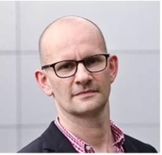
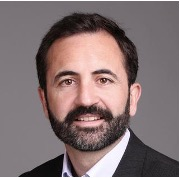
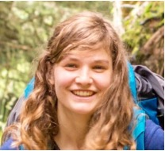
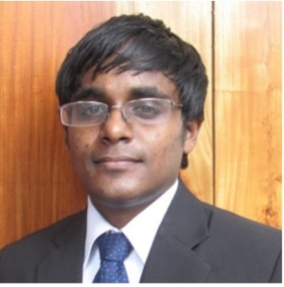
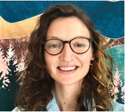
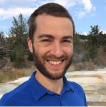
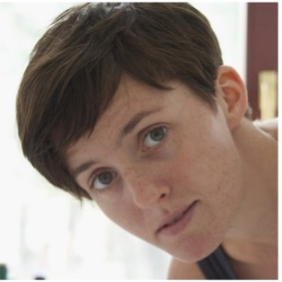
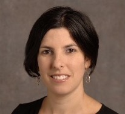

Cognition and Natural Sensory Processing Workshop (CNSP)
2-4 August 2021
Schedule
Day 1 (2nd August 2021)
Session 1 (2pm GMT): Investigating auditory processing with natural sound listening paradigms
- The CNSP-Workshop: What, why, and how
- Jonas Obleser — Neural tracking of continuous sensory stimuli
- Edmund Lalor — The Temporal Response Function: Concept and basic research
- Hands-on tutorial: Demonstration and practice. Environment setup.
Session 2 (4.30pm GMT): Encoding and Decoding models for neural signal analysis: Use and interpretation
- Lien Decruy & Joshua Kulasingham — Encoding models
- Laura Gwilliams — Decoding models
- Aaron Nidiffer — Stimulus feature extraction
- Hands-on tutorial: Demonstration and practice + Details on the mini-project
Day 2 (3rd August 2021)
Mini-session (3:30pm GMT): Christian Brodbeck — Investigating speech processing with Python and Eelbrain
Session 3 (4pm GMT): TRFs in applied research: Case studies
- Sarah Jessen — Speech sound perception in infants
- Elana Zion-Golumbic — Audio-visual perception
- Jens Hjortkjær — Auditory TRFs in ageing and hearing impaired cohorts
- General discussion
Day 3 (4th August 2021)
Session 4 (4pm GMT):
- Q/A Session(s)
- Closing remarks
Speaker Line-Up
Jonas Obleser, PhD
Jonas Obleser researches processes of perception and listening using methods from the cognitive neurosciences. After studying and obtaining his doctorate in psychology at the University of Konstanz, he worked at the Institute of Cognitive Neuroscience, University College London, and at the Max Planck Institute in Leipzig, where he established the research group "Auditory Cognition". Since 2016, he has held the Chair of Physiological Psychology at the University of Lübeck, Germany. His current research interests include the dynamic changes of brain activity in perception and cognition, and how these processes interact during listening. His research is currently funded by the European Research Council (ERC), among others.
Edmund Lalor, PhD
Ed Lalor is an Associate Professor in the Departments of Biomedical Engineering and Neuroscience at the University of Rochester. The major goal of his lab's work is to develop novel methodologies for neuroscience research and to apply those methodologies to study human sensory, perceptual and cognitive processing in health and disease. This work has led to improved flexibility in the design of experiments aimed at the neurophysiological correlates of attention and multisensory integration and some novel insights into the neurophysiological specificity of early sensory deficits in disorders such as autism and schizophrenia. In addition, it has provided researchers with the ability to obtain temporally detailed responses to stimuli that are much more naturalistic than those that are often used in EEG experiments. This includes significant recent efforts aimed at understanding the neurophysiology of receptive speech processing and how it is affected by attention and multisensory input. Ongoing work in the lab seeks to continue to develop sophisticated computational modelling frameworks to allow for greater interpretation of noninvasively recorded brain data and to translate these novel modelling methods into impactful research in clinical populations.
Lien Decruy, PhD
Her background is in Audiology and Neuroscience. In 2014 and 2015, she obtained her Master’s degree in Speech Therapy and Audiology Sciences as well as a Postgraduate training in Audiology and Hearing Aid Fitting, both at the KU Leuven in Belgium. Between 2015 and 2019, she was a PhD-student at the Research Group Experimental ORL (ExpORL, Department of Neurosciences, KU Leuven) under supervision of Prof. Dr. Ir. Tom Francart. In her PhD thesis, she focused on measuring neural tracking of natural speech in normal-hearing and hearing impaired listeners of different ages, providing several first steps towards an objective (EEG) measure of speech understanding. After obtaining her PhD, Lien continued in the field of neuroscience and started in January 2020 as a postdoctoral researcher at the university of Maryland (USA), in the lab of Dr. Jonathan Simon, Dr. Samira Anderson and Dr. Stefanie Kuchinsky. Her research mainly involved the evaluation of a new auditory‐cognitive training program for older adults, based on EEG/MEG responses to natural speech (using decoding and encoding models) and pupillometry. In June 2021, Lien started working as a study coordinator and research assistant of the medical ethical committee in the hospital AZ Groeninge Kortrijk, Belgium.
Joshua Kulasingham
Joshua P. Kulasingham is a PhD student in Dr. Jonathan Z. Simon’s lab at the Department of Electrical and Computer Engineering, University of Maryland, College Park, USA. His research explores time-locked neural responses to speech, typically in a cocktail party paradigm, using MEG. He works with encoding models (Temporal Response Functions) that estimate cortical responses to relevant features of continuous speech. He has investigated high frequency time-locked responses to speech, and cortical processing of spoken sentences and equations.
Laura Gwilliams, PhD
Laura Gwilliams received her PhD in Psychology with a focus in Cognitive Neuroscience from New York University in May 2020. Currently she is a post-doctoral researcher at UCSF, using MEG and ECoG data to understand how linguistic structures are parsed and composed while listening to continuous speech. The ultimate goal of Laura’s research is to describe speech comprehension in terms of what operations are applied to the acoustic signal, which representational formats are generated and manipulated (e.g. phonetic, syllabic, morphological), and under what processing architecture.
Aaron Nidiffer, PhD
Aaron Nidiffer, Ph.D. is a Postdoctoral Research Associate in the Computational Cognitive Neurophysiology Laboratory of Dr. Edmund Lalor at the University of Rochester. Before moving to Rochester, he completed his doctorate at Vanderbilt University in Nashville, TN under the supervision of Dr. Mark Wallace. His interests lie broadly in speech processing and multisensory perception. His dissertation research focused on how correlations in the audiovisual sensory environment affect perception and object formation. As a postdoc, he is using both complex artificial (e.g., stochastic figure-ground) and natural (e.g., speech) signals to explore the neural underpinnings of audiovisual binding and the unique contributions of visual signals to language perception.
Christian Brodbeck, PhD
Christian Brodbeck studies the neural basis of language, and speech processing in particular. When humans listen to speech, the acoustic signal that enters the ears is a complex pattern of air pressure fluctuations. Yet, listeners intuitively and almost instantaneously experience meaning in these sounds. His research focuses on the transformations that happen in the brain to enable this. To study this, he mainly uses MEG and EEG with reverse correlation. Reverse correlation allows us to think of brain responses as a continuous transformation of the speech signal, rather than relying on pre-defined events in the stimuli. It also allows us to disentangle responses related to different levels of processing, such as the formation of auditory and lexical representations. He uses Python to develop tools to make this research possible, and many of those tools are available in the open source libraries MNE-Python and Eelbrain.
Sarah Jessen, PhD
Sarah has a background in neuroscience and psychology and currently runs the babylab at the University of Lübeck in Germany. Her research focus is on the neural mechanisms of social and emotional processing in the first year of life, and she uses predominantly EEG but also eyetracking and fNIRS.
Elana Zion Golumbic, PhD
Dr. Elana Zion Golumbic is the head of the Human Brain Dynamics Laboratory at the Multidisciplinary Center for Brain Research at Bar Ilan University. Her research focuses on studying how the brain processes dynamic information under real-life conditions and environments. Specifically, she seeks to understand the neural mechanisms underlying the processing of natural continuous stimuli, with a specific interest in real-life speech. Among the questions investigated in her lab are: How is information from different senses integrated on-line? How does the brain encode competing input from our rich multisensory environments? And what are the mechanisms for managing attention in noisy and cluttered environments? Research in her lab utilizes a range of techniques for recording electric and magnetic signals from the human brain (EEG, MEG and ECoG), alongside a variety of psychophysical tools (eye-tracking, virtual reality, psychoacoustics). Dr. Zion Golumbic is an expert in applying advanced signal processing tools and machine-learning algorithms to human-recorded brain signals, an approach that is critical for furthering our understanding of the underlying neural code and the link between brain operations and human behavior.
Jens Hjortkjær, PhD
Jens Hjortkjær is currently a Senior Researcher in auditory cognitive neuroscience at the Hearing Systems group at the Technical University of Denmark (DTU), and also at the Danish Research Centre for Magnetic Resonance (DRCMR) at Copenhagen University Hospital Hvidovre. He leads the Auditory Cognitive Neuroscience group at DTU Health Technology. His main focus is on using neuroimaging, psychophysics, and computational modelling to understand the auditory system in normal and hearing-impaired listeners. JH studied cognitive psychology and music at Copenhagen University from where he received his PhD in 2011. After joining the DRCMR, he worked on using functional MRI to study the auditory cortex and effects of attention on cortical sound representations. He joined DTU as a postdoc in 2013 working on decoding auditory attention from speech-EEG, and worked on cognitive control of hearing aids in the H2020 COCOHA project. He is currently coordinator of the UHEAL project that combines MRI and neurophysiology to investigate auditory nerve degeneration and its consequences in central brain processing and behaviour.